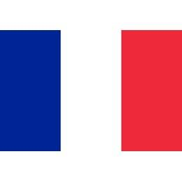

카롤루스 대제가 죽고 프랑크 왕국은 계속 분열된다. 바이킹, 마자르족, 동로마 제국이 계속 제국의 영역을 침입해 오면서, 각 지방은 방위를 위해 주종 관계를 맺고 농노제를 실시했다. 또 지중해에 준동하는 사라센 바르바르 해적 때문에 지중해 교역 형태가 변화했다. 프랑크 왕국의 공식 언어는 라틴어였는데, 지방간의 교류가 줄어들자 각각 프랑스 지방의 프랑스어, 이탈리아 지방의 이탈리아어로 분화되었고,[2] 게르만족의 전통이 강했던 독일에서는 독일어가 나온다.
